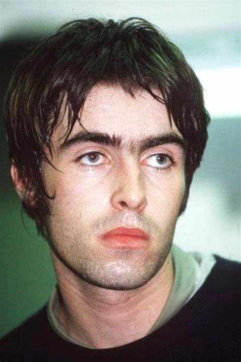
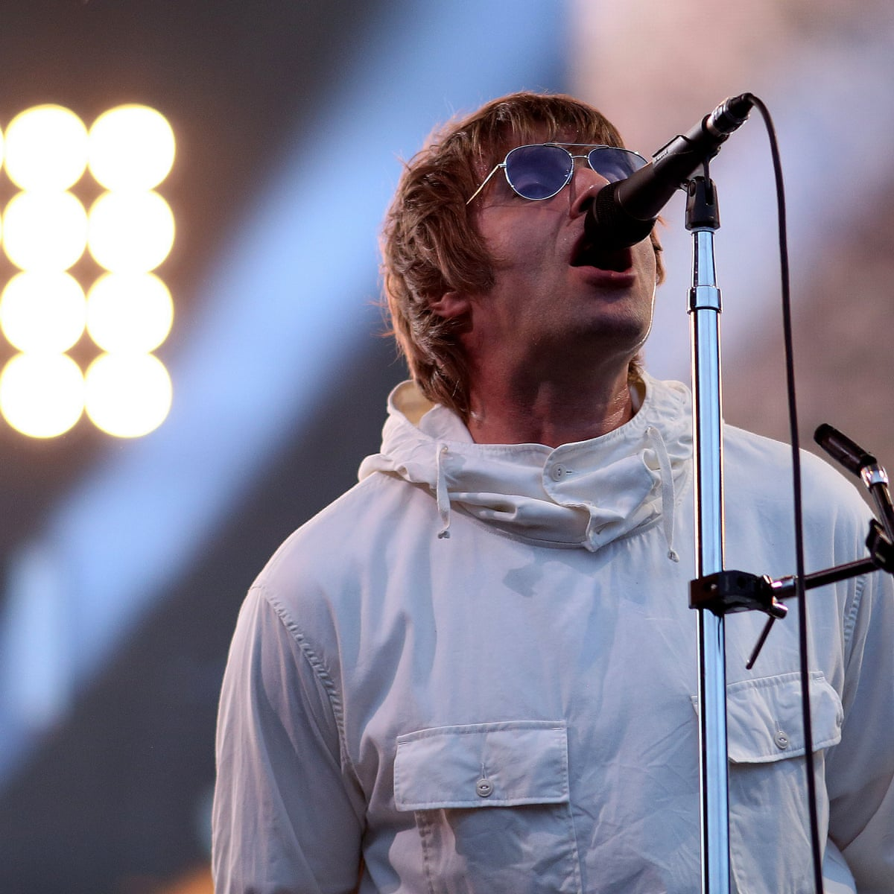
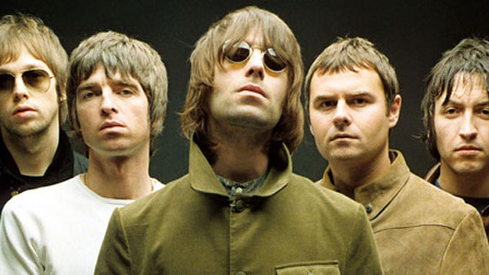
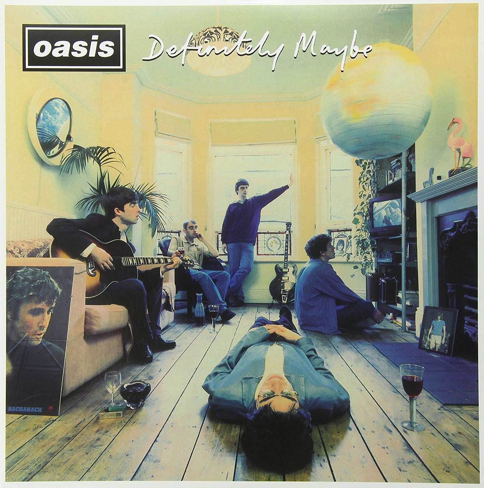

Manchester City Football Team
Manchester City Football Team
|
|||||
| 宿舍首页 | 首页 | 队员 | 历史 | 荣誉奖项 | 青训成果 |
|
|||||
|---|---|---|---|---|---|
| Beady eyes 乐队并不是曼城球迷群体中最知名的乐队，乐队的主唱Liam Gallagher实际上是英国传奇乐队Oasis前主唱，在Oasis解散后与其他前Oasis成员共同组建，作为曼城死忠乐队的精神延续，主唱也毫无疑问是曼城球迷圈一呼百应的传奇人物。 | |
| Liam Gallagher | |
|  |  |
| Oasis绿洲乐队 | |
| 作为英国摇滚的绝对传奇，oasis乐队名曲无数，曾一度称霸英陆，歌曲历经三十余年，仍传唱不绝，代表作有《Don't look back in anger》，《Whatever》，《Wonderwall》,《Live Forever》等。首专《Definitely Maybe》更是摇滚乐迷不可不听的经典，如果你是个没听过Oasis的曼城球迷或者摇滚乐迷，那就taxi了。 | |
|  |  |